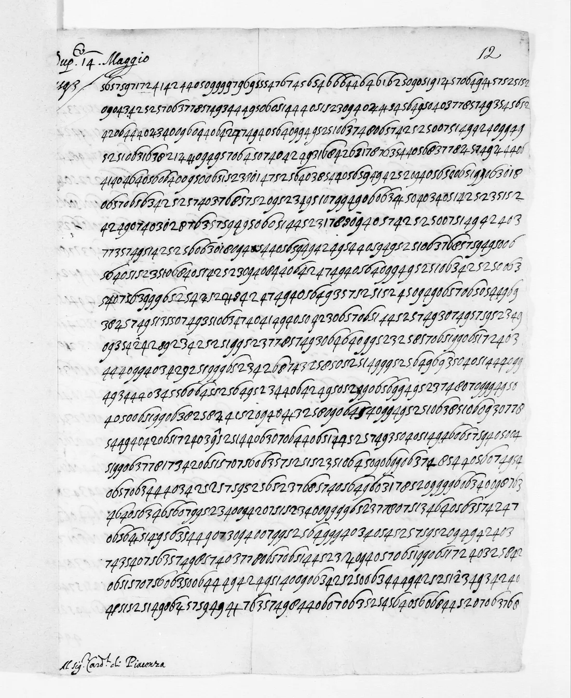

Deuxième dossier · Correspondance pontificale
Le légat Sega et l’instruction de Rome, 14 mai 1593
Douze pages entièrement couvertes de chiffres, envoyées de Rome au légat du pape à Paris au moment où les États de la Ligue cherchent un roi catholique. Nous en proposons un déchiffrement probable et partiel : le sens général se dégage nettement, mais de nombreux passages restent lacunaires ou incertains.
Mise à jour — 23 octobre 2026 (d’après Tomokiyo 2019). Notre lecture a été alignée ligne à ligne sur la lecture préliminaire publiée par Satoshi Tomokiyo dans Cryptologia en 2019.[1] Aux places alignées, nous lisons la même lettre dans 98 % des cas. Les écarts venaient surtout de notre transcription : à 27 endroits, nous avions lu 0 pour 6 ou 6 pour 0. Nous les avons corrigés d’après Tomokiyo 2019 ; tous concordent avec le sens (frutto, sopra, ancora, figliola, manifestamente, forze, ministri, ultimamente, estremamente…). Deux valeurs de lettres viennent aussi de sa table : 97 = s et 61 = b. Plusieurs lectures changent : anzi in rispetto (et non dispetto), all’hora saria impossibile (et non all’huomo), di dire, ma pericolosissimo. Cette version intègre aussi la relecture n° 4 de Brice Dudout (22 octobre). Dans la page Documents, ces corrections sont soulignées en pointillé.
Mise à jour — 21 octobre 2026 (relecture n° 3). Les 83 points restés douteux (mots codés devinés et ruptures) ont été relus sur l’image par Claude (Opus 5.5), puis contre-relus indépendamment par Claude Fable : les deux relectures concordent sur 80 points. Les corrections sont surtout des nuls non relevés. Les ruptures passent de 39 à 27, soit environ 0,2 % des chiffres. Trois mots de la nomenclature sont établis : 016 = regno (9 occurrences), 540 = principi et 09 = per la. Le 17 encadré est un article défini (il, la ou le). De nouveaux passages se lisent, par exemple infiniti parlano più liberamente, senza pericolo e disordine ou aspirare alla Infanta. Cette relecture a été faite par un modèle sur l’image, pas par un humain ; Brice Dudout doit encore la confirmer.
Mise à jour — 20 octobre 2026 (relecture n° 2). Brice Dudout a relu sur l’image 157 nouveaux points douteux. Les 4 barrés, les signes mêlés de 4 et de 2 et les « 9 chapeau » se révèlent être des nuls ; le 0 pointé vaut 0. Les ruptures de lecture passent d’environ 2 % à moins de 0,5 % des chiffres. Deux mots de la nomenclature sont identifiés (75 = con, 12 = il), et de nouveaux passages se lisent. La version précédente, du 20 octobre au matin, est conservée dans le dossier de recherche.
Synthèse : un déchiffrement probable et partiel
Ce que nous proposons. Le système de chiffrement est identifié. Il comprend des chiffres nuls, des paires de chiffres pour les lettres et des nombres de nomenclature encadrés de nuls. La clé est assez établie pour lire de longs passages en italien. Ils forment un texte suivi et cohérent avec la situation de mai 1593.
Ce que nous ne proposons pas. Il ne s’agit pas d’un texte complet ni d’une édition définitive. Plusieurs nombres de la nomenclature ne sont pas valués. Environ 0,2 % des chiffres transcrits forment encore des ruptures. Certains mots sont restitués. La lecture est améliorée par passes successives ; cette page en donne l’état du 23 octobre 2026, après la confrontation avec la lecture de Satoshi Tomokiyo (2019).
Antériorité. Satoshi Tomokiyo a étudié cette pièce avec deux autres chiffrés continus de 1593. Il en a donné la segmentation et un déchiffrement préliminaire dans Cryptologia 43(1), 2019.[1] Satoshi Tomokiyo nous a transmis cet article le 22 octobre 2026. Il établit les nulles (3 et 8, chiffres barrés), l’alphabet de chiffrement et, en annexe, une lecture préliminaire suivie de cette instruction comme de la lettre de Paris du 15 mai (no 8). La segmentation, l’alphabet et la première lecture de ces pièces lui reviennent. Notre travail, mené sans connaître l’article, les retrouve indépendamment. Il y ajoute la valeur de nombres du nomenclateur que l’article laissait ouverts, comme 426 Navarra, 017 Infanta, 002 Sa Sainteté, 007 Espagne, 77 che, 74 et et 76 non, ainsi que la traduction et le commentaire historique. Nos passes suivantes confronteront notre lecture à la sienne, signe par signe.
Mai 1593 : la Ligue cherche un roi
Depuis l’assassinat d’Henri III en 1589, le roi légitime selon l’ordre de succession est Henri de Navarre, protestant. La Ligue catholique refuse de le reconnaître. En janvier 1593, elle réunit à Paris des États généraux pour élire un roi catholique. Philippe II d’Espagne pousse la candidature de sa fille, l’infante Isabelle-Claire-Eugénie, petite-fille d’Henri II par sa mère. Fin avril, une conférence s’ouvre à Suresnes entre ligueurs et royaux. Le 25 juillet 1593, Henri IV abjurera le protestantisme à Saint-Denis.
Le pape Clément VIII est représenté à Paris par le cardinal-légat Filippo Sega, évêque de Plaisance, d’où son titre de « cardinal de Plaisance ». La pièce étudiée ici est une instruction envoyée de Rome au légat. Elle répond point par point à ses demandes.
Le document
En marge du premier feuillet : « Dup.to 14 Maggio 1593 », c’est-à-dire le duplicata d’une dépêche du 14 mai 1593. Au pied : « Al sig. Card.le di Piacenza ». Le reste, soit douze pages et environ 14 500 chiffres, est écrit en chiffres arabes continus, sans séparation visible. Le catalogue de la BnF et Cryptiana décrivent la pièce comme entièrement chiffrée.

Comment le texte est chiffré
- Des chiffres nuls. Le 3 et le 8 ne comptent pas : ils sont semés partout, y compris au milieu des mots, pour brouiller le découpage. Certains signes particuliers jouent le même rôle : le 4 barré (qui mêle 4 et 1), le « 4 barré 2 » (qui mêle 4 et 2), le 9 surmonté d’un chapeau et d’autres signes composites. Lus comme des chiffres, ils casseraient la lecture. Le 0 pointé, lui, compte comme un 0.
- Des paires pour les lettres. Une fois les nuls retirés, le texte se lit par paires de chiffres. Chaque paire vaut une lettre, et les lettres fréquentes ont plusieurs paires possibles (substitution homophonique). Par exemple, 40 = a, 06 = e, 49 = i, 52 = o, 51 = n, 57 = s.
- Une petite nomenclature. Des mots fréquents ou sensibles sont notés par un nombre de deux ou trois chiffres encadré de deux nuls. Ainsi « 3 77 8 » = che, « 3 74 8 » = et, « 3 76 8 » = non, « 3 75 8 » = con, « 3 12 8 » = il. La relecture n° 3 en établit d’autres : 016 = regno, 540 = principi, 09 = per la. Le 17 encadré sert d’article défini (il, la ou le ; valeur probable). Le point posé sur le 0 de certains mots codés (01 = in, 02) ne change pas leur valeur. Les noms propres suivent le même procédé : 426 désigne très probablement Navarre (Henri IV) et 017 l’Infante.
Ce n’est pas le chiffre de la lettre envoyée de Paris le lendemain, 15 mai, conservée au même volume (f. 22). Celle-ci fait l’objet d’une lecture distincte, encore en cours.
Ce que Rome écrit au légat
Résumé en français moderne de la lecture probable. Les points numérotés suivent l’ordre du document ; les passages non lus sont omis, pas reconstruits.
- Pas de nouvelle excommunication déclarée. Les ligueurs demandent qu’on déclare solennellement l’excommunication des partisans de Navarre. Rome juge la mesure inutile, et même nuisible pour le moment. On a fait peu de cas de la sentence déjà rendue contre Navarre et du monitoire pontifical publié depuis. Les censures sont méprisées, et les renouveler ne ferait que tourner davantage en dérision l’autorité apostolique. Les censures sont « médicinales », disent les canonistes. Une déclaration en forme obligerait à citer chacun personnellement, ce qui est plein de difficultés et de dangers. Elle risquerait surtout de jeter les intéressés dans un schisme.
- Ne pas désespérer les catholiques du camp royal. On perdrait tout espoir de les détacher de Navarre. Certains y sont tenus « comme prisonniers », et Sa Sainteté sait qu’il y en a qui sont sans faute.
- Exclure une maison de la succession. Les sentences ne servent à rien sans la force pour les faire exécuter ; on le voit avec Navarre et avec les princes protestants. Rome ne veut donner aucune approbation sans être consultée d’abord. Elle redoute la rivalité entre les chefs de la Ligue.
- Le tiers parti. Rome envisage qu’il faille prendre « un prince du sang » ou un « tiers parti ». Elle demande qui doit prétendre à la main de l’Infante. Un prince catholique dont la religion est avérée ne pourrait être refusé.
- La prétention de l’Infante et la loi salique. Le pape a vu les mémoires en faveur de l’Infante que lui a montrés « Pegna ». Il s’agit vraisemblablement du canoniste espagnol Francisco Peña ; c’est une hypothèse d’identification. « N’importe quel docteur médiocre, sans ouvrir un livre », pourrait y répondre. La loi salique, même si elle n’était pas écrite, l’est « dans les cœurs ». Depuis Clovis, aucune femme n’a succédé à la couronne, et la coutume et le consentement des peuples ont toujours appelé les mâles.
- Les intentions espagnoles. Les Espagnols disent combattre pour la défense de la Ligue. Leurs adversaires répondent « à pleine bouche » qu’on découvre maintenant que ce n’était pas pour la religion. Rome craint que l’un et l’autre parti ne basculent. Elle soupçonne l’Espagne de n’avoir jamais voulu abattre Navarre, mais seulement détacher l’une et l’autre partie, afin que tout finisse par lui tomber entre les mains (lecture probable).
- Ce qu’il faut redouter. Navarre pourrait se rallier les catholiques « sous couleur d’une feinte conversion ». On pourrait aussi prendre un autre prince du sang, ou bien les États pourraient traîner sans conclure, ou se dissoudre sans rien faire. Malgré ses faibles forces, le Saint-Siège « n’abandonnera jamais la cause publique ».
- La conduite envers l’Espagne. Le légat peut aider la prétention de l’Infante, mais seulement si cela se peut faire « sans danger de désordre », avec une personne agréable aux Français. L’intention du pape reste « la conservation de la religion ».
Quelques passages en italien
Texte déchiffré, orthographe légèrement normalisée et ponctuation de l’éditeur. Les crochets signalent des valeurs de nomenclature ou des restitutions ; « … » signale une lacune.
… si va a pericolo evidentissimo di [danno], poi che potriano … traboccarsi in … uno scisma …
… [S. S.] dice che le informationi che ha visto a favore della [Infanta], mostrateli da Pegna, … non però tali, che ogni mediocre dottore, senza rivoltar libri, ci potria rispondere … quando bene la legge salica non si trovasse scritta, è però scritta [nei] cuori …
… da Clodoveo in qua … non hanno mai visto donna succedere alla corona, et più d’una volta è uscito il regno d’una famiglia et passato in un’altra …
… si potesse debellar [Navarra], ma solo staccar l’una parte et l’altra, acciò nell’ultimo gli habbino da capitar nelle mani …
… sotto colore di finta conversione aderisse a [Navarra], o si pigliasse un altro del sangue, o andasse in lungo senza concludere … le deboli forze della Sede apostolica, non abbandonerà mai la causa publica …
… non servono a niente, come vediamo in [Navarra] … nei [principi] protestanti …
… della religione non solo in quel [regno], ma ancho negl’altri …
Comment la lecture a été obtenue
- Transcription. Les douze pages ont été relevées chiffre par chiffre sur les vues Gallica en haute définition, en notant à part les signes barrés et composites.
- Identification du système. Le chiffre de la lettre du 15 mai ne s’applique pas : il ne couvre qu’environ 30 % des paires. Le découpage à longueur variable a fait apparaître le rôle des nuls 3 et 8. Une fois ces nuls retirés, le texte se lit en paires.
- Contrôle avant l’essai réel. Le même solveur a d’abord été appliqué à un faux chiffré de même forme, tiré d’un texte italien de nonciature. Il y retrouve 95 à 97 % des lettres. Ensuite seulement, il a été lancé sur le document, où il fait apparaître de l’italien. Une page transcrite après avoir fixé la clé, et lue sans la retoucher, a servi de vérification.
- Relecture des signes. Brice Dudout a relu 112 signes douteux sur l’image. Il a montré que le 6 de cette main, dont l’arc très long passe au-dessus des chiffres voisins, avait souvent été lu « 0 ». Un détecteur fondé sur ces exemples, doublé d’un contrôle géométrique des boucles sur l’image, a corrigé ces confusions dans le reste du texte. Chaque correction a ensuite été relue dans le texte déchiffré.
- Relecture n° 2 (20 octobre). Brice Dudout a relu 157 autres points, souvent en corrigeant les chiffres voisins du point signalé. Il a aussi distingué systématiquement le 4, le 4 barré, le 4 barré 2, le 9 et le 9 chapeau, ainsi que le 0 pointé. Traiter ces signes comme des nuls réduit les ruptures de 137 à 39 ; les lire comme des chiffres les ferait remonter.
- Relecture n° 3 (21 octobre). Les 83 points restés douteux ont été relus sur l’image par Claude (Opus 5.5), puis contre-relus indépendamment par Claude Fable, en jugeant la forme avant le sens. Les deux relectures concordent sur 80 points. Les corrections retenues (19 points ; celles de confiance basse sont écartées) ramènent les ruptures de 39 à 27. Un 6 supplémentaire, relevé sur l’image, a été rétabli. Un autre, qui cassait la lecture, n’a pas été retenu.
Ce qui reste incertain
- Plusieurs nombres de la nomenclature ne sont pas valués (notamment 02, qui pourrait valoir molto sans que tous les contextes s’y prêtent, 24 et 19 ; le nombre 75, d’abord supposé désigner Navarre, vaut en fait con). Les valeurs « Saint-Père », « Espagne » et « France » restent faibles.
- Moins d’une trentaine de chiffres (environ 0,2 %) forment encore des ruptures, et quelques valeurs rares de la clé restent instables. Quelques signes rares (9 pointé, 4 pointé, 2 chapeau) n’ont pas encore de valeur établie.
- Le texte chiffré porte « Gregorio decimo tertio » là où l’on attendrait Grégoire XIV, auteur du monitoire de 1591 contre Navarre. Il s’agit sans doute d’un lapsus du rédacteur ou du chiffreur ; nous conservons la lecture.
- La relecture n° 3 a été faite par un modèle sur l’image. Trois points y restent indécis, et deux corrections de confiance basse n’ont pas été appliquées.
- L’identification de « Pegna » avec Francisco Peña est une hypothèse.
- Les passages cités sont choisis parmi les mieux lus. Ailleurs, la lecture est discontinue.
Références
Satoshi Tomokiyo, « Identifying Italian ciphers from continuous-figure ciphertexts (1593) », Cryptologia 43(1), 2019, p. 23–46. doi:10.1080/01611194.2018.1503207 ↗ Article transmis par l’auteur le 22 octobre 2026 : segmentation, alphabet et lecture préliminaire des nos 6 et 8 (annexe).
Satoshi Tomokiyo, Cryptiana, « A List of Cipher Materials in Mémoires de la Ligue in the French Archives » (notices de BnF Français 3984). cryptiana.web.fc2.com ↗
Daniel Bourdeau, catalogue des chiffrés tentés et non lus (dépôt cyphersolver), qui a signalé ces pièces comme ouvertes.
BnF, Français 3984, no 6, ff. 12–19. Gallica ↗
Aloys Meister, Die Geheimschrift im Dienste der päpstlichen Kurie, Paderborn, 1906 (systèmes de Matteo Argenti ; nomenclature entre chiffres nuls).